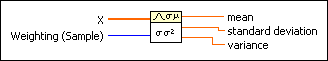

Standard Deviation and Variance VI
Owning Palette: Probability & Statistics VIs
Requires: Base Development System
Computes the mean, standard deviation, and variance of the values in the input sequence X.

 Add to the block diagram Add to the block diagram |
 Find on the palette Find on the palette |